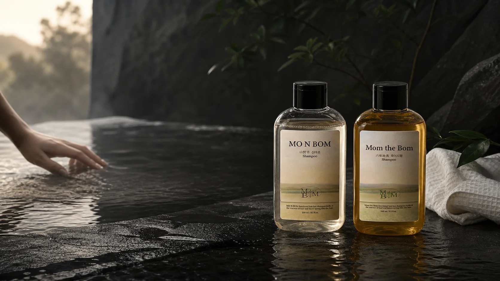
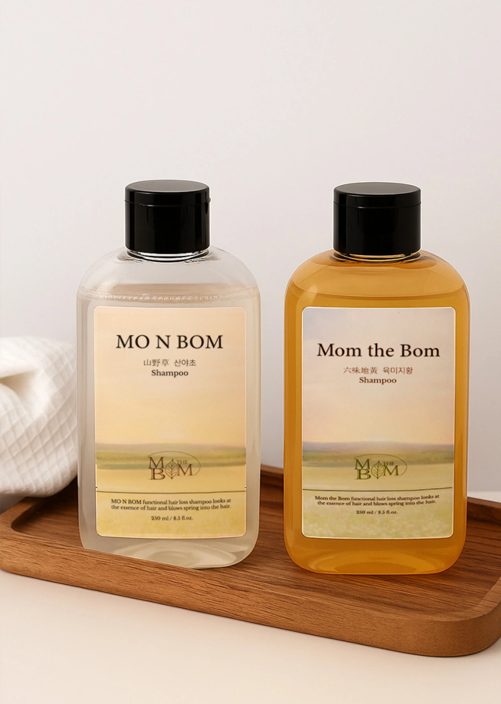

세정 기반Cleansing base
다이소듐라우레스설포석시네이트, 코코-베타인, 소듐코코일알라니네이트, 라우릴글루코사이드.Disodium Laureth Sulfosuccinate, Coco-Betaine, Sodium Cocoyl Alaninate and Lauryl Glucoside.

BODY CARE 01 / DAILY HAIR RITUAL
매일 닿는 샴푸,
기준부터 신중하게.
A shampoo used every day
deserves a clearer standard.
과장된 약속보다 향, 사용감, 전성분, 그리고 확인 가능한 시험 범위를 먼저 봤습니다. 몸 더봄이 제안하는 첫 번째 생활 기준입니다. Before sweeping promises, we look at scent, feel, the complete ingredient list and evidence we can describe precisely. This is the first daily standard from MOM THE BOM.
WHY THIS PRODUCT
그래서 더 많은 것을 약속하기보다, 무엇으로 씻는지, 어떻게 쓰는지, 어떤 범위까지 확인했는지를 선명하게 보여드립니다. That is why we show what it is made with, how it is used and exactly what has been verified, instead of promising more than a shampoo should.
01매일의 세정 루틴A daily cleansing ritual
02전성분의 투명한 공개A transparent ingredient list
03시험 범위의 정확한 설명Evidence stated within its scope

FORMULA, READ AS A WHOLE
다이소듐라우레스설포석시네이트, 코코-베타인, 소듐코코일알라니네이트, 라우릴글루코사이드.Disodium Laureth Sulfosuccinate, Coco-Betaine, Sodium Cocoyl Alaninate and Lauryl Glucoside.
나이아신아마이드, 덱스판테놀, 살리실릭애씨드, 하이드롤라이즈드케라틴과 엘라스틴.Niacinamide, Dexpanthenol, Salicylic Acid, Hydrolyzed Keratin and Hydrolyzed Elastin.
산양삼, 약모밀, 병풀, 천궁, 참당귀, 감초를 포함한 식물 유래 추출물.Botanical extracts including Wild Ginseng, Heartleaf, Centella, Cnidium, Angelica and Licorice.
* 성분 설명은 전성분 함유 사실과 원료적 특성에 한하며 제품의 의학적 효능을 의미하지 않습니다. * Ingredient descriptions refer only to presence in the formula and ingredient characteristics. They do not imply medical efficacy.
정제수, 다이소듐라우레스설포석시네이트, 코코-베타인, 소듐코코일알라니네이트, 글리세린, 라우릴글루코사이드, 소듐클로라이드, 알란토인, 살리실릭애씨드, 덱스판테놀, 나이아신아마이드, 하이드롤라이즈드케라틴, 하이드롤라이즈드엘라스틴, 아보카도열매추출물, 호호바씨오일, 삼씨오일, 맥주효모추출물, 호프추출물, 소리쟁이뿌리추출물, 병풀추출물, 당느릅나무뿌리추출물, 천궁뿌리추출물, 참당귀뿌리추출물, 창과감초뿌리추출물, 산양삼추출물, 약모밀추출물, 살구씨추출물, 닥풀(금화규)꽃/잎/줄기추출물, 카프릴릴글라이콜, 폴리쿼터늄-10, 부틸렌글라이콜, 멘톨, 에틸헥실글리세린, 다이소듐이디티에이, 1,2-헥산다이올, 하이드록시아세토페논, 로즈마리잎오일, C12-14알케스-12, 시트릭애씨드
Water, Disodium Laureth Sulfosuccinate, Coco-Betaine, Sodium Cocoyl Alaninate, Glycerin, Lauryl Glucoside, Sodium Chloride, Allantoin, Salicylic Acid, Dexpanthenol, Niacinamide, Hydrolyzed Keratin, Hydrolyzed Elastin, Persea Gratissima (Avocado) Fruit Extract, Simmondsia Chinensis (Jojoba) Seed Oil, Cannabis Sativa Seed Oil, Saccharomyces Cerevisiae Extract, Humulus Lupulus (Hops) Extract, Rumex Crispus Root Extract, Centella Asiatica Extract, Ulmus Davidiana Root Extract, Cnidium Officinale Root Extract, Angelica Gigas Root Extract, Glycyrrhiza Uralensis Root Extract, Panax Ginseng Extract, Houttuynia Cordata Extract, Prunus Armeniaca (Apricot) Kernel Extract, Abelmoschus Manihot Flower/Leaf/Stem Extract, Caprylyl Glycol, Polyquaternium-10, Butylene Glycol, Menthol, Ethylhexylglycerin, Disodium EDTA, 1,2-Hexanediol, Hydroxyacetophenone, Rosmarinus Officinalis (Rosemary) Leaf Oil, C12-14 Pareth-12, Citric Acid.
EVIDENCE, WITH ITS LIMITS
모앤봄 산야초 샴푸는 피부 첩포에 의한 일차자극 인체적용시험에서 피부 자극지수 0.00, 비자극(Excellent) 판정을 받았습니다. In a human primary skin irritation patch test, Mo & Bom Botanical Shampoo recorded an irritation index of 0.00 and was classified as Non-irritating (Excellent).
* 피부 첩포에 의한 일차자극 인체적용시험 결과이며 개인차가 있을 수 있습니다. 본 시험은 탈모 증상 완화, 두피 개선, 질환 예방 또는 치료 효과를 입증하는 시험이 아닙니다. * Result of a human primary skin irritation patch test. Individual results may vary. This test does not demonstrate hair-loss symptom relief, scalp improvement, disease prevention or treatment effects.
A SIMPLE DAILY RITUAL
제품 라벨의 용법·용량을 기준으로 안내합니다. Directions below follow the product label.
온수로 모발과 두피를 충분히 적십니다.Thoroughly wet the hair and scalp with warm water.
적당량 3~5 ml를 모발과 두피에 골고루 도포해 마사지합니다.Apply 3–5 ml evenly to the hair and scalp, then massage.
잔여물이 남지 않도록 물로 깨끗하게 헹굽니다.Rinse thoroughly with water so no residue remains.
PRODUCT INFORMATION
실물 라벨과 시험보고서가 일치하는 정보만 정리했습니다. Only information consistent across the physical label and test report is listed here.
PARTNERSHIP / PRODUCT 01
국내 유통과 해외 수출을 위한 제품 정보, 시험 자료, 협업 범위를 함께 검토합니다. We are ready to review product information, test materials and partnership scope for Korean distribution and international export.
파트너십 제안하기 Start a partnership conversation